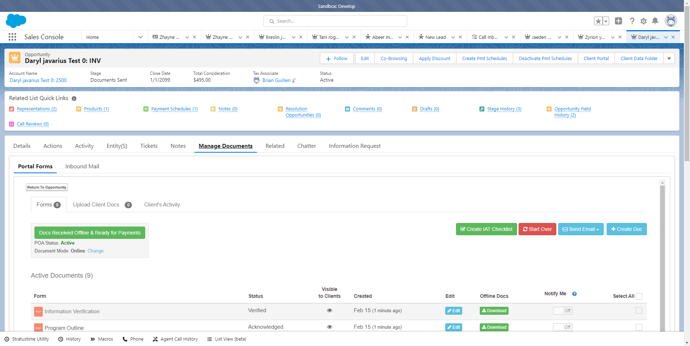

Report generated on 14-Feb-2022 at 13:45:00 by pytest-html v3.1.1
| JAVA_HOME | C:\Program Files\Java\jdk-17.0.2 |
| Packages | {"pluggy": "1.0.0", "py": "1.11.0", "pytest": "6.2.5"} |
| Platform | Windows-10-10.0.19044-SP0 |
| Plugins | {"html": "3.1.1", "metadata": "1.11.0"} |
| Python | 3.9.7 |
1 tests ran in 124.95 seconds.
(Un)check the boxes to filter the results.
0 passed, 0 skipped, 1 failed, 0 errors, 0 expected failures, 0 unexpected passes| Result | Test | Duration | Links |
|---|---|---|---|
| No results found. Try to check the filters | |||
| Failed | test_e2e.py::TestOne::test_e2e[dataLoad0] | 124.64 | |
|
 self = <tests.test_e2e.TestOne object at 0x000001965C84FA60> def test_e2e(self): log = self.getLogger() action = ActionChains(self.driver) wait = WebDriverWait(self.driver, 20) tabs = self.driver.window_handles self.driver.switch_to.window(tabs[1]) sf_HomePage = SalesForceHomePage(self.driver) try: sf_HomePage.nav_console_home().click() except Exception as e: sf_HomePage.login().click() self.driver.get("https://optimatax--develop.lightning.force.com/lightning/page/home") log.info(e) try: sf_HomePage.create_data_button().click() log.info("In the Salesforce sales console, on the home page, selected 'create data'") except Exception as e: alert = self.driver.switch_to.alert() alert.accept() log.info(e) clientInformation = self.getTempEmail() self.driver.switch_to.window(tabs[1]) sf_HomePage.create_data_email().send_keys(clientInformation["email_address"]) sf_HomePage.create_data_name().send_keys(clientInformation["first_name"] + " " + clientInformation["last_name"]) leadPage = sf_HomePage.create_data_submit() log.info("Filled out the required fields: Name Email set 'stage' drop-down field as 'lead' selected 'create data'") button = leadPage.phone_edit_pencil() self.driver.execute_script("arguments[0].click();", button) tel_css_selector = leadPage.phone_number().get_attribute("value") leadPage.phone_number().clear() save = leadPage.contact_details_save() self.driver.execute_script("arguments[0].click();", save) log.info("Deleted primary phone field from the created lead and selected 'save'") # Checking visibility means the element is displayed returns the WebElement self.checkVisibility(leadPage.conversionReadinessPhone) #wait.until(expected_conditions.visibility_of_element_located((By.CSS_SELECTOR, "h3[title='Phone']"))) log.info("Under 'lead conversion readiness' window–'convert' button is not visible and shows phone" " field that needs to be entered in order to convert") self.driver.execute_script("window.scrollTo(0,0);") time.sleep(1) self.driver.refresh() #checkPresence will return WebElement edit_pencil = self.checkPresence(leadPage.primaryPhoneEditPencil) self.driver.execute_script("arguments[0].click();", edit_pencil) self.driver.execute_script("window.scrollTo(0,0);") leadPage.phone_number().send_keys(tel_css_selector) secondSave = leadPage.contact_details_save() action.move_to_element(secondSave).perform() action.click(secondSave).perform() log.info("Entered all required fields and selected 'save'") convertButton = leadPage.convert_button() self.driver.execute_script("arguments[0].click();", convertButton) log.info("Selected 'convert' in 'lead conversion readiness' window") invOpportunity = leadPage.lead_conversion_save() log.info("Select 'save' in 'lead conversion' modal") #presence works because it only checks if element is on DOM vs visibility which checks both–visibility and DOM self.checkPresence(invOpportunity.paymentScheduleButton) time.sleep(5) self.driver.refresh() # checkPresence will return WebElement and check presence payment_schedule_button = self.checkPresence(invOpportunity.paymentScheduleButton) self.driver.execute_script("arguments[0].click();", payment_schedule_button) log.info("In the investigation opportunity, selected 'create payment schedules'") try: self.selectDate() invOpportunity.iframe_payment_save_button().click() self.driver.switch_to.default_content() log.info("Selected payment date <= 30 days and selected 'save'") self.checkInvisibility(invOpportunity.paymentModuleHeader) except: log.warning("A modal appeared with no fields so will refresh and try again") self.driver.refresh() log.info("Refreshed successfully") # checkPresence will return WebElement and check presence payment_schedule_button = self.checkPresence(invOpportunity.paymentScheduleButton) self.driver.execute_script("arguments[0].click();", payment_schedule_button) log.warning("In the investigation opportunity, selected 'create payment schedules'") self.selectDate() invOpportunity.iframe_payment_save_button().click() self.driver.switch_to.default_content() log.info("Selected payment date <= 30 days and selected 'save'") # element is either a locator (text) or an WebElement self.checkClickablity(invOpportunity.manage_docs_tab()) #wait.until(expected_conditions.element_to_be_clickable((By.XPATH, "//ul[@role='tablist']/li[7]/a"))) manage_docs_element = invOpportunity.manage_docs_tab() self.driver.execute_script("arguments[0].click();", manage_docs_element) self.checkFrameAndSwitchToIt(invOpportunity.manageDocsIframeOne) #putting sleep here because error that iframe cannot be found is thrown self.checkFrameAndSwitchToIt(invOpportunity.manageDocsIframeTwo) self.checkClickablity(invOpportunity.manageDocsStart) invOpportunity.manage_docs_start().click() self.checkClickablity(invOpportunity.sendEmail) invOpportunity.send_email() #self.driver.find_element(By.CSS_SELECTOR, "button[class='btn btn-success send-email']").click() tabs = self.driver.window_handles self.driver.switch_to.window(tabs[2]) #self.driver.find_element(By.CSS_SELECTOR, "a[title='Refresh this page']").click() self.driver.switch_to.default_content() self.driver.find_element(By.XPATH, "//td[contains(text(),'Welcome to Optima Tax Relief')]").click() self.driver.switch_to.frame("iframeMail") self.driver.find_element(By.LINK_TEXT, "Create Account →").click() time.sleep(1) portal = self.driver.window_handles[3] self.driver.switch_to.window(portal) self.driver.find_element_by_name("password").send_keys("123456") self.driver.find_element_by_name("password_confirmation").send_keys("123456") self.driver.find_element(By.CSS_SELECTOR, "button[id='login-btn'").click() self.driver.find_element(By.XPATH, "//button[contains(text(), 'Acknowledge')]").click() #wait.until(expected_conditions.visibility_of_element_located((By.XPATH, "//button[contains(text(), 'Started')]"))) self.checkClickablity((By.XPATH, "//button[contains(text(), 'Started')]")) > self.driver.find_element(By.XPATH, "//button[contains(text(), 'Started')]").click() test_e2e.py:147: _ _ _ _ _ _ _ _ _ _ _ _ _ _ _ _ _ _ _ _ _ _ _ _ _ _ _ _ _ _ _ _ _ _ _ _ _ _ _ _ C:\Python39\lib\site-packages\selenium\webdriver\remote\webelement.py:81: in click self._execute(Command.CLICK_ELEMENT) C:\Python39\lib\site-packages\selenium\webdriver\remote\webelement.py:710: in _execute return self._parent.execute(command, params) C:\Python39\lib\site-packages\selenium\webdriver\remote\webdriver.py:424: in execute self.error_handler.check_response(response) _ _ _ _ _ _ _ _ _ _ _ _ _ _ _ _ _ _ _ _ _ _ _ _ _ _ _ _ _ _ _ _ _ _ _ _ _ _ _ _ self = <selenium.webdriver.remote.errorhandler.ErrorHandler object at 0x000001965C84F790> response = {'status': 404, 'value': '{"value":{"error":"stale element reference","message":"stale element reference: element is n...\n\\tRtlGetAppContainerNamedObjectPath [0x77887A9E+286]\\n\\tRtlGetAppContainerNamedObjectPath [0x77887A6E+238]\\n"}}'} def check_response(self, response: Dict[str, Any]) -> None: """ Checks that a JSON response from the WebDriver does not have an error. :Args: - response - The JSON response from the WebDriver server as a dictionary object. :Raises: If the response contains an error message. """ status = response.get('status', None) if not status or status == ErrorCode.SUCCESS: return value = None message = response.get("message", "") screen: str = response.get("screen", "") stacktrace = None if isinstance(status, int): value_json = response.get('value', None) if value_json and isinstance(value_json, str): import json try: value = json.loads(value_json) if len(value.keys()) == 1: value = value['value'] status = value.get('error', None) if not status: status = value.get("status", ErrorCode.UNKNOWN_ERROR) message = value.get("value") or value.get("message") if not isinstance(message, str): value = message message = message.get('message') else: message = value.get('message', None) except ValueError: pass exception_class: Type[WebDriverException] if status in ErrorCode.NO_SUCH_ELEMENT: exception_class = NoSuchElementException elif status in ErrorCode.NO_SUCH_FRAME: exception_class = NoSuchFrameException elif status in ErrorCode.NO_SUCH_SHADOW_ROOT: exception_class = NoSuchShadowRootException elif status in ErrorCode.NO_SUCH_WINDOW: exception_class = NoSuchWindowException elif status in ErrorCode.STALE_ELEMENT_REFERENCE: exception_class = StaleElementReferenceException elif status in ErrorCode.ELEMENT_NOT_VISIBLE: exception_class = ElementNotVisibleException elif status in ErrorCode.INVALID_ELEMENT_STATE: exception_class = InvalidElementStateException elif status in ErrorCode.INVALID_SELECTOR \ or status in ErrorCode.INVALID_XPATH_SELECTOR \ or status in ErrorCode.INVALID_XPATH_SELECTOR_RETURN_TYPER: exception_class = InvalidSelectorException elif status in ErrorCode.ELEMENT_IS_NOT_SELECTABLE: exception_class = ElementNotSelectableException elif status in ErrorCode.ELEMENT_NOT_INTERACTABLE: exception_class = ElementNotInteractableException elif status in ErrorCode.INVALID_COOKIE_DOMAIN: exception_class = InvalidCookieDomainException elif status in ErrorCode.UNABLE_TO_SET_COOKIE: exception_class = UnableToSetCookieException elif status in ErrorCode.TIMEOUT: exception_class = TimeoutException elif status in ErrorCode.SCRIPT_TIMEOUT: exception_class = TimeoutException elif status in ErrorCode.UNKNOWN_ERROR: exception_class = WebDriverException elif status in ErrorCode.UNEXPECTED_ALERT_OPEN: exception_class = UnexpectedAlertPresentException elif status in ErrorCode.NO_ALERT_OPEN: exception_class = NoAlertPresentException elif status in ErrorCode.IME_NOT_AVAILABLE: exception_class = ImeNotAvailableException elif status in ErrorCode.IME_ENGINE_ACTIVATION_FAILED: exception_class = ImeActivationFailedException elif status in ErrorCode.MOVE_TARGET_OUT_OF_BOUNDS: exception_class = MoveTargetOutOfBoundsException elif status in ErrorCode.JAVASCRIPT_ERROR: exception_class = JavascriptException elif status in ErrorCode.SESSION_NOT_CREATED: exception_class = SessionNotCreatedException elif status in ErrorCode.INVALID_ARGUMENT: exception_class = InvalidArgumentException elif status in ErrorCode.NO_SUCH_COOKIE: exception_class = NoSuchCookieException elif status in ErrorCode.UNABLE_TO_CAPTURE_SCREEN: exception_class = ScreenshotException elif status in ErrorCode.ELEMENT_CLICK_INTERCEPTED: exception_class = ElementClickInterceptedException elif status in ErrorCode.INSECURE_CERTIFICATE: exception_class = InsecureCertificateException elif status in ErrorCode.INVALID_COORDINATES: exception_class = InvalidCoordinatesException elif status in ErrorCode.INVALID_SESSION_ID: exception_class = InvalidSessionIdException elif status in ErrorCode.UNKNOWN_METHOD: exception_class = UnknownMethodException else: exception_class = WebDriverException if not value: value = response['value'] if isinstance(value, str): raise exception_class(value) if message == "" and 'message' in value: message = value['message'] screen = None # type: ignore[assignment] if 'screen' in value: screen = value['screen'] stacktrace = None st_value = value.get('stackTrace') or value.get('stacktrace') if st_value: if isinstance(st_value, str): stacktrace = st_value.split('\n') else: stacktrace = [] try: for frame in st_value: line = self._value_or_default(frame, 'lineNumber', '') file = self._value_or_default(frame, 'fileName', '<anonymous>') if line: file = "%s:%s" % (file, line) meth = self._value_or_default(frame, 'methodName', '<anonymous>') if 'className' in frame: meth = "%s.%s" % (frame['className'], meth) msg = " at %s (%s)" msg = msg % (meth, file) stacktrace.append(msg) except TypeError: pass if exception_class == UnexpectedAlertPresentException: alert_text = None if 'data' in value: alert_text = value['data'].get('text') elif 'alert' in value: alert_text = value['alert'].get('text') raise exception_class(message, screen, stacktrace, alert_text) # type: ignore[call-arg] # mypy is not smart enough here > raise exception_class(message, screen, stacktrace) E selenium.common.exceptions.StaleElementReferenceException: Message: stale element reference: element is not attached to the page document E (Session info: chrome=98.0.4758.82) E Stacktrace: E Backtrace: E Ordinal0 [0x0117FDC3+2555331] E Ordinal0 [0x011177F1+2127857] E Ordinal0 [0x01012E08+1060360] E Ordinal0 [0x01015524+1070372] E Ordinal0 [0x010153EE+1070062] E Ordinal0 [0x01015650+1070672] E Ordinal0 [0x0103FD5C+1244508] E Ordinal0 [0x01034ED6+1199830] E Ordinal0 [0x01057B0C+1342220] E Ordinal0 [0x01034984+1198468] E Ordinal0 [0x01057C14+1342484] E Ordinal0 [0x010675FA+1406458] E Ordinal0 [0x01057976+1341814] E Ordinal0 [0x010336B6+1193654] E Ordinal0 [0x01034546+1197382] E GetHandleVerifier [0x01319622+1619522] E GetHandleVerifier [0x013C882C+2336844] E GetHandleVerifier [0x012123E1+541697] E GetHandleVerifier [0x01211443+537699] E Ordinal0 [0x0111D18E+2150798] E Ordinal0 [0x01121518+2168088] E Ordinal0 [0x01121660+2168416] E Ordinal0 [0x0112B330+2208560] E BaseThreadInitThunk [0x76B0FA29+25] E RtlGetAppContainerNamedObjectPath [0x77887A9E+286] E RtlGetAppContainerNamedObjectPath [0x77887A6E+238] C:\Python39\lib\site-packages\selenium\webdriver\remote\errorhandler.py:247: StaleElementReferenceException -------------------------------Captured log call-------------------------------- INFO test_e2e:test_e2e.py:34 In the Salesforce sales console, on the home page, selected 'create data' INFO test_e2e:test_e2e.py:46 Filled out the required fields: Name Email set 'stage' drop-down field as 'lead' selected 'create data' INFO test_e2e:test_e2e.py:55 Deleted primary phone field from the created lead and selected 'save' INFO test_e2e:test_e2e.py:60 Under 'lead conversion readiness' window–'convert' button is not visible and shows phone field that needs to be entered in order to convert INFO test_e2e:test_e2e.py:76 Entered all required fields and selected 'save' INFO test_e2e:test_e2e.py:81 Selected 'convert' in 'lead conversion readiness' window INFO test_e2e:test_e2e.py:84 Select 'save' in 'lead conversion' modal INFO test_e2e:test_e2e.py:93 In the investigation opportunity, selected 'create payment schedules' INFO test_e2e:test_e2e.py:99 Selected payment date <= 30 days and selected 'save' | |||